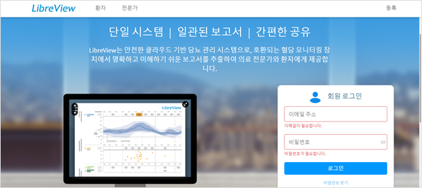
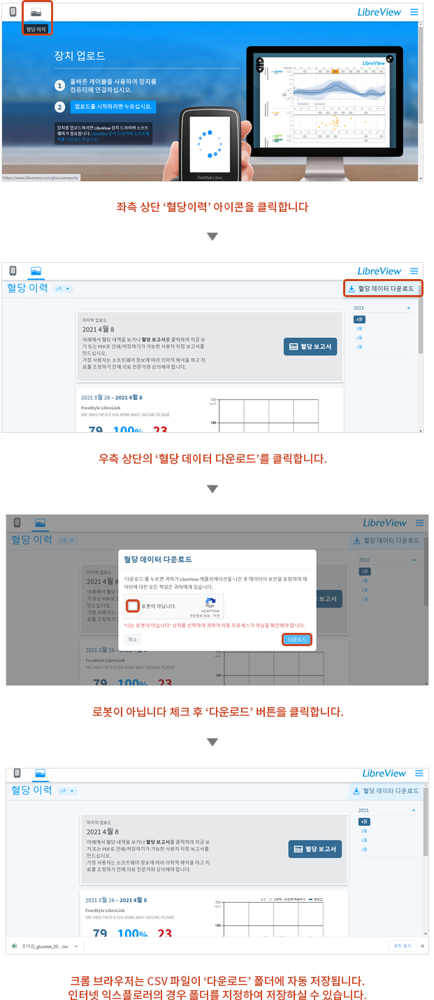

아래와 같이 “국민건강보험공단 공고 급여보장실-2019-제2호”에 따라
연속혈당측정에 관한 개인정보 및 민감정보를 수집하고자 하오니 해당 회원분들의 많은 관심 부탁드립니다.
공단은 연속혈당측정용 전국 지원 대상자의 연속혈당측정기 사용에 따른 혈당 변화내역 정보를 구축하여 급여 관리 및
효과평가에 활용하기 위해 연속혈당측정용 전극(당뇨병 소모성 재료) 공급업소로부터 연속혈당측정 정보 등을
제공받을 수 있다.
단 정보제공에 동의한 지원대상자에 한한다
연속혈당측정 정보를 제공하고자 하는 회원께서는 아래와 같은 방법으로 연속혈당정보(민감정보)를 제공해 주셔야 합니다.
프리스타일 리브레뷰 사이트에서 아래와 같이 연속혈당정보 CSV 파일을 다운로드합니다.
01
PC에서 리브레뷰 사이트(www.libreview.com)에 접속합니다.
02
프리스타일리브레 링크 앱 가입 이메일과 비밀번호를 입력 후 로그인합니다.

03
아래 그림과 같이 혈당정보를 다운로드합니다.

하단의 연속혈당측정 정보(민감정보) 제공하기 버튼을 클릭한 후 아래 이미지의 입력사항을 모두 입력하신 후 Step 01에서 저장한 CSV 파일을 업로드 하신 후 완료 버튼을 클릭하시면 됩니다.